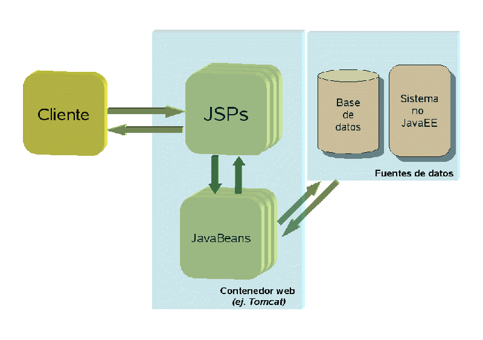
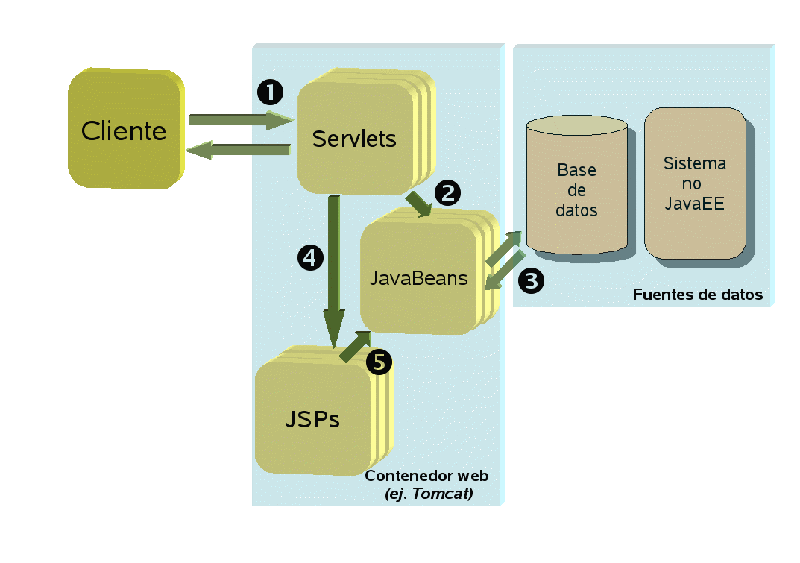
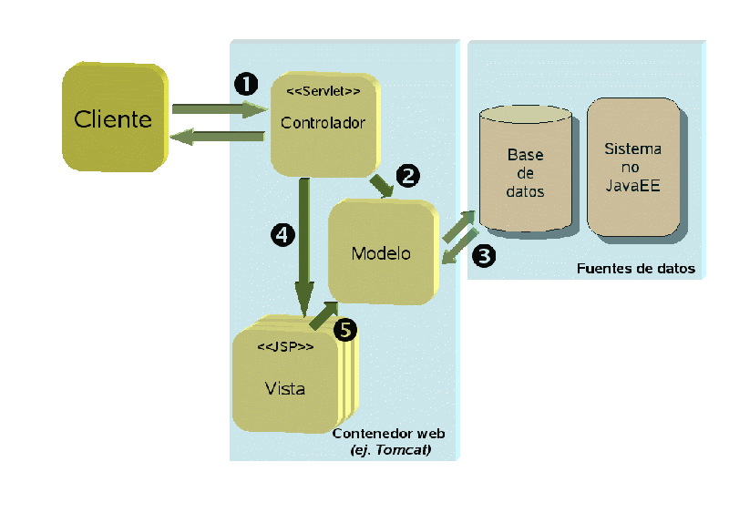

Charla 2: Patrones para aplicaciones web. Modelo-Vista-Controlador
En esta charla trataremos patrones para aplicaciones web basadas en servlets y JSP. En la primera charla ya vimos algunos ampliamente usados en este tipo de aplicaciones: DAOs, Transfer Objects, façades, etc. Estos patrones se encuadran dentro de las capas de acceso a datos (DAO y TO) y negocio (TO y façade). Por ello, aquí nos centraremos en patrones para la capa de presentación. De todos ellos el más importante y conocido es el Modelo-Vista-Controlador (MVC). Antes de presentarlo haremos un breve repaso a las distintas alternativas de diseño para la capa de presentación en una aplicación web.
Arquitecturas para la capa de presentación en aplicaciones web
Teniendo en cuenta que servlets y JSP son equivalentes desde el punto de vista funcional y que es mucho menos tedioso desarrollar un interfaz web en JSP que en servlets, la mayoría de aplicaciones web suelen usar JSPs para la capa de presentación o una combinación de JSPs y servlets. Veamos cuáles son las opciones a la hora de diseñar la arquitectura de la capa de presentación.
Aplicaciones JSP-céntricas
En estas aplicaciones cada página JSP contiene todo el procesamiento asociado a un caso de uso (por ejemplo hacer login en la aplicación) o de parte de un caso de uso (por ejemplo, una de las páginas del proceso de registro de nuevo usuario). Lo más inmediato a la hora de programar este tipo de aplicación es lo que podríamos llamar la "ausencia de arquitectura": poner todo el código de presentación, lógica de negocio y acceso a datos dentro de los JSPs. En aplicaciones pequeñas resulta una manera sencilla de "estructurar" el sistema, pero por razones evidentes en aplicaciones medianas o grandes esto se convierte en una pesadilla de desarrollo y mantenimiento .
Las especificaciones iniciales de JSP hablaban de solucionar los problemas anteriores con lo que Sun llamó el "modelo 1" de arquitectura para aplicaciones web. La idea básica es que el código de negocio y acceso a datos se "saca fuera" de los JSPs de modo que éstos se encargan únicamente de la presentación. La propuesta original habla de usar JavaBeans como encargados de "disparar" la lógica de negocio y el acceso a datos porque su uso y sintaxis son sencillos y son el modelo de componentes "estándar" en Java. Combinando esto con el uso de taglibs propias o estándar (tipo JSTL) se puede eliminar el código Java del JSP de modo que incluso diseñadores web no programadores podrían en teoría ocuparse en su totalidad de los JSP.

Combinación de servlets y JSP
Con la arquitectura anterior, el JSP no se dedica únicamente a presentar los resultados, sino que tiene más responsabilidades. Una alternativa es que para cada caso de uso haya un servlet distinto que se encargue de tomar los parámetros de la petición, llamar a la lógica de negocio y colocar los resultados en algún ámbito que el JSP pueda consultar(por ejemplo en la petición o en la sesión). El JSP se puede limitar a mostrar los resultados obtenidos.

Aunque parezca que el flujo de ejecución se complica, en realidad se realizan las mismas tareas, solo que en un orden ligeramente diferente y lo más importante: separando responsabilidades.
- Un servlet recibe la petición HTTP del cliente y analiza los parámetros
- El servlet activado dispara la lógica de negocio llamando al/los JavaBean/s correspondiente/s
- Los JavaBeans se encargan de ejecutar la lógica de negocio y el acceso a datos
- El servlet coloca los JavaBeans en algún ámbito al que un JSP pueda acceder. Típicamente se usaría el objeto request. Después llama al JSP apropiado.
- El JSP llamado, accede al JavaBean y muestra la información que contiene
Este modelo presenta la ventaja con respecto al anterior de que el código del JSP se simplifica todavía más. Estamos solo a un paso de la arquitectura más usada en la actualidad para aplicaciones web: Modelo-Vista-Controlador (MVC), que veremos a continuación.
Modelo-Vista-Controlador (MVC)
Esta arquitectura se parece mucho a la combinación de servlets y JSPs que hemos visto antes, con la única diferencia de que solo hay un servlet, que es el que recibe todas las peticiones. ¿Cómo sabe entonces el servlet qué lógica de negocio hay que disparar y qué JSP es el apropiado para mostrar los resultados?. Esto se puede hacer por ejemplo pasándole en la petición HTTP algún parámetro adicional que lo indique, como:
http://.../aplicacionMVC/miUnicoServlet?accion=login&user=javaee&password=javaee
En este ejemplo el parámetro accion es el que le indica al servlet qué es lo que hay que hacer. Los demás parámetros se necesitan para poder ejecutar la operación, aquí hacer login en el sistema. Luego veremos que hay otras alternativas (más usadas) a la hora de decirle al servlet qué operación hay que ejecutar.
Los componentes de la arquitectura: el modelo, la vista y el controlador
Veamos de nuevo la arquitectura, pero ahora usando la terminología habitual de MVC:
- El controlador (en nuestro caso el servlet) es el encargado de:
- Averiguar cuál es la operación a ejecutar
- Tomar los parámetros de entrada y disparar la lógica de negocio apropiada pasándole dichos parámetros.
- Colocar los resultados de la operación en algún ámbito accesible a un JSP (normalmente la petición)
- Redirigir al navegador al JSP apropiado
- El modelo es la lógica de negocio y el código de acceso a datos. Aunque hasta ahora hemos hablado de JavaBeans, esto era una sugerencia de Sun para simplificar el interfaz con el JSP. El modelo puede ser en realidad cualquier cosa: EJBs (componentes de negocio distribuidos), clases Java convencionales, JavaBeans, etc.
- Las acciones son las operaciones a ejecutar para cada caso de uso de la aplicación. Podemos imaginarnos que cada acción encapsula de alguna forma todo el procesamiento asociado a un caso de uso (o a parte de un caso de uso, dependiendo de cómo modelemos el sistema). Las acciones se suelen considerar como parte del modelo, aunque en realidad están en la frontera entre éste y el controlador.
- La vista es el elemento encargado de mostrar los resultados obtenidos en el modelo. En nuestro caso, son los JSPs
Nótese que cada petición HTTP implica una acción distinta y una vista distinta, mientras que solo hay un controlador y un modelo, aunque cada petición requerirá partes distintas del mismo: por ejemplo para buscar productos en el catálogo hará falta ejecutar distinta lógica y acceder a distintos JavaBeans que para registrarse en la web.
El diagrama de una posible arquitectura MVC (luego veremos que hay variantes) se muestra en la siguiente figura. Nótese que es muy parecido al de la combinación de servlets y JSPs que veíamos antes, con la única diferencia de la terminología y que solo hay un servlet.

Una implementación de MVC
Al ser éste un patrón complejo, tener una implementación concreta ayuda a comprender el funcionamiento. Describiremos a continuación una implementación sencilla pero totalmente funcional de MVC.
El controlador
En nuestro caso el controlador se implementa mediante un servlet. Esto es bastante típico de la mayoría de frameworks MVC.
Configuración del web.xml
El primer paso a realizar es configurar el descriptor de la aplicación (web.xml) para que las peticiones con determinado patrón vayan todas a parar al controlador. Así, todas las peticiones con un path común (por ejemplo /mvc/*) o con una extensión común (por ejemplo, en Struts se suele usar *.do) irán a dicho servlet, que a partir de la URL decide cuál es la acción a disparar. En nuestro caso, el servlet se mapeará a todas las peticiones *.mvc
<!-- mapeado para el servlet controlador de MVC (fragmento del web.xml)-->
<servlet>
<servlet-name>Controlador</servlet-name>
<servlet-class>mvc.controlador.Controlador</servlet-class>
</servlet>
<servlet-mapping>
<servlet-name>Controlador</servlet-name>
<url-pattern>*.mvc</url-pattern>
</servlet-mapping>
Un refinamiento adicional sería restringir el acceso directo a todas las páginas del sitio, para que solo fueran accesibles a través del controlador. Esto se podría hacer por ejemplo metiendo todas las páginas en un directorio protegido y especificando mediante una etiqueta <security-constraint> su condición de acceso restringido. No será necesario especificar ningún <role-name> si no se desea acceso directo por parte de ningún usuario (en cualquier caso dicho acceso será posible a través del servlet). Una alternativa a la restricción de ciertas URLs sería colocar la web dentro de WEB-INF, que no es directamente accesible desde fuera del contenedor web. Hay que tener en cuenta que si se utiliza la restricción de acceso no será posible poner enlaces en las páginas de la forma habitual. Un simple salto entre páginas tendrá que ser ejecutado como una acción a través del servlet controlador. Esto según se mire puede ser tedioso (ya que complicamos una operación sencilla) o beneficioso (ya que abstraemos la URL de la página destino, lo que hace posible el cambio sin que por ejemplo queden afectados los bookmarks del usuario).
Las acciones
En el init() del servlet hay que crear la lista de acciones que el controlador puede ejecutar, y asignarle a cada una un nombre simbólico. En nuestro caso la lista de acciones está fija en el código para simplificar el ejemplo, aunque lo más razonable sería mantenerla en un fichero aparte, por ejemplo en formato XML.
public void init () throws ServletException {
acciones = new HashMap();
acciones.put("prueba", new AccionPrueba());
acciones.put("login", new AccionLogin());
...
}
Cada acción no es más que una instancia de una clase que se disparará (ejecutando cierto método) a petición del controlador. Procesamiento de las peticiones HTTP. En nuestro caso, una acción concreta es una clase que debe heredar de la clase abstracta Accion, y el disparo se realiza llamando al método ejecutar.
Ciclo de procesamiento
El ciclo de procesamiento de las peticiones es el siguiente:
- A partir de la URL se obtiene el nombre simbólico de la acción a ejecutar. En nuestro caso es el nombre del "documento" solicitado, sin la extensión .mvc
- A partir del nombre simbólico de la acción, se obtiene una instancia de la acción a ejecutar. En nuestro caso esto es sencillo, ya que se guarda una instancia de cada acción en una tabla hash accesible por nombre.
- Se ejecuta la acción, llamando a un método. En nuestro caso todas las acciones implementan el interface mvc.modelo.acciones.Accion, que obliga a definir un método ejecutar. Para que la acción pueda cumplir su tarea habrá que pasarle la información contenida en el HttpServletRequest y probablemente también el HttpServletResponse. Frameworks MVC más sofisticados probablemente pasen esta información como un objeto independiente del API de servlets, habiendo copiado antes a él la información relevante, con el objeto de inpendendizar las acciones de la capa HTTP.
- La acción coloca el resultado obtenido en algún sitio al que pueda acceder la vista (por ejemplo, como un atributo en el ámbito de la petición) y devuelve un valor que le sirve al controlador para determinar la siguiente vista a mostrar. En nuestro caso, la acción devuelve directamente el nombre del JSP a mostrar. En un caso más realista devolvería un nombre simbólico que serviría para determinar el nombre real de la vista (por ejemplo, a través de un fichero de configuración).
Aquí solamente mostramos el esqueleto del procesamiento de peticiones, para ver cómo se hace cada parte habrá que acudir al código fuente completo.
public void doPost (HttpServletRequest request,
HttpServletResponse response)
throws ServletException, IOException {
String nomAccion;
Accion ac;
String nomVista = null;
try {
//obtener de la URL el nombre de la acción
nomAccion = obtNomAccion(request);
//a partir del nombre, obtener la clase asociada a la acción
ac = getAccion(nomAccion);
//ejecutar la accion
nomVista = ac.ejecutar(getServletContext(), request, response);
//mostrar la vista asociada a la accion
if (nomVista!=null)
mostrarVista(nomVista, request, response);
}
catch(MVCException e) {
request.setAttribute("exception", e);
mostrarVista(VISTA_ERROR, request, response);
}
}
El modelo
Este es el punto donde suele terminar la "responsabilidad" del framework MVC y empieza el núcleo de nuestra aplicación.
Como ya hemos comentado, en nuestro caso las acciones implementan el interface mvc.modelo.acciones.Accion, que obliga a definir el método ejecutar.En general, lo primero que hará una acción es comprobar que los parámetros son del tipo esperado y cumplen una serie de normas de validación (por ejemplo, determinado formato para datos textuales, o estar en un rango para valores numéricos). La mayor parte de frameworks MVC proporcionan medios para que el usuario defina "validadores" de manera más o menos sencilla y configurable. Una vez la acción ha terminado su trabajo, debe colocar los resultados en algún lugar accesible a la vista que debe mostrarlos. En nuestro caso, los almacenaremos como atributos de la petición HTTP. Como el controlador se redirige al JSP que hace de vista con un forward, este tendrá acceso a dichos atributos.
Las acciones lo que harán será modificar y/o obtener el estado del sistema. Dicho estado estará representado por un modelo orientado a objetos del dominio, en el cual representaremos las entidades de nuestra aplicación. La "lógica de negocio" son los procesos a realizar para cumplimentar alguna operación en el sistema. En una primera aproximación es tentador introducir toda esta lógica dentro del cuerpo de las acciones. Así, por ejemplo, la acción RealizarPedido dentro de su método ejecutar podría chequear que el pedido es válido y el cliente no es moroso, aplicar el descuento apropiado al tipo de cliente y plazo de pago e introducir el pedido en la base de datos mediante JDBC. No obstante, hay que tener en cuenta que en algunos frameworks MVC las acciones están "acopladas" a la capa web (por ejemplo en Struts) y por tanto no son el lugar apropiado para introducir dicha lógica, que debería ser lo más reutilizable posible para otros clientes (por ejemplo, "clientes ricos" Swing).
La vista
En nuestro caso una vista será simplemente una página JSP que se limitará a mostrar los datos procesados por la acción. Idealmente, dichos datos estarán encapsulados en beans accesibles a través del ámbito de la petición,con lo que el código Java a introducir dentro de la vista se reducirá al mínimo
Variantes de MVC
Siendo un patrón complejo, MVC admite multitud de variantes de funcionamiento. No obstante, nos vamos a centrar aquí en diferenciar dos tipos de MVC: push y pull. El esquema que hemos visto hasta el momento es de tipo push, ya que la vista recibe los resultados de la ejecución de la acción, ella no los dispara. En el catálogo de Core J2EE patterns esto es lo que se conoce como el patrón "Service to worker". Un ejemplo real de implementación de este patrón es el framework Struts.
Una alternativa a este modelo sería el modelo pull, en el cual la vista es la responsable de disparar la acción. En el catálogo de Core J2EE patterns esto es lo que se conoce como el patrón "Dispatcher view". Un ejemplo real de framework que usa este enfoque es JavaServer Faces (JSF), que aunque se conoce básicamente como un modelo de componentes GUI para la web también incluye un modelo MVC para el desarrollo de las aplicaciones. En JSF, cuando se "dibuja" la página es cuando los beans asociados a la misma disparan la lógica de negocio.
Business delegate
Para terminar esta discusión sobre patrones para la capa de presentación hablaremos brevemente del business delegate. Este es el patrón que está en la frontera entre presentación y negocio. En realidad, no es más que un caso particular del patrón Façade que ya vimos en la primera charla dedicada a patrones. Es decir, es un objeto que sirve de interfaz a la capa de negocio. Normalmente se implementa como una clase Java convencional que tiene un método por cada caso de uso de la aplicación.
La misión fundamental del business delegate es ocultar a la capa de presentación los detalles de implementación de la capa de negocio. De este modo, por ejemplo si la aplicación pasa a ser distribuida y la capa de negocio se reimplementa con componentes EJB la capa de presentación no tendrá que cambiar si el interfaz que proporciona el business delegate permanece estable.